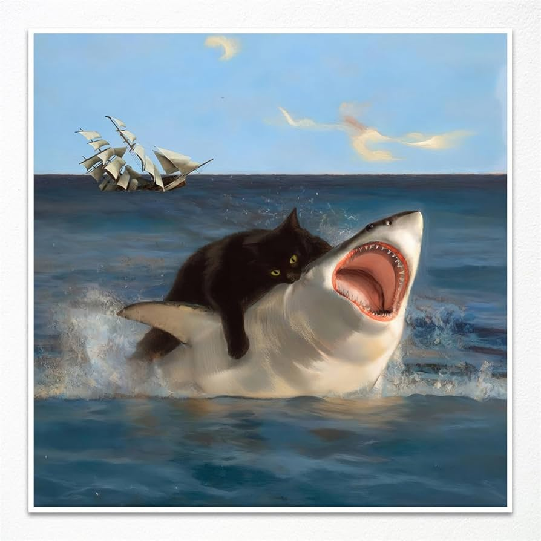
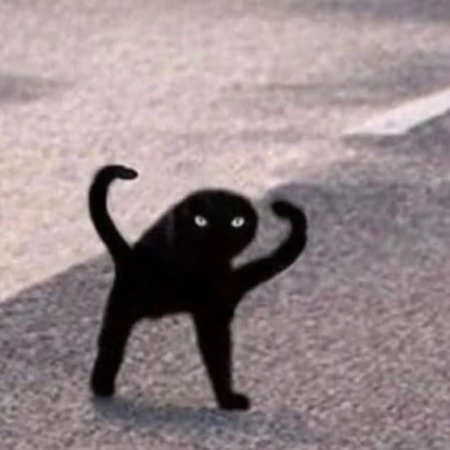

Los gatos, Bestias mas grandes que los tiburones

prueba 100% real
el aumento de gatos aventuradose en el mar aumento un 65%
esto se cree a que por la cercania de los tiburones a la orilla aumentado en los ultimos meses
por algun motivo los gatos son expertos cazadores de estas fieras de enorme temaño

se cree que esto se deve a la rara evolucion de los gatos